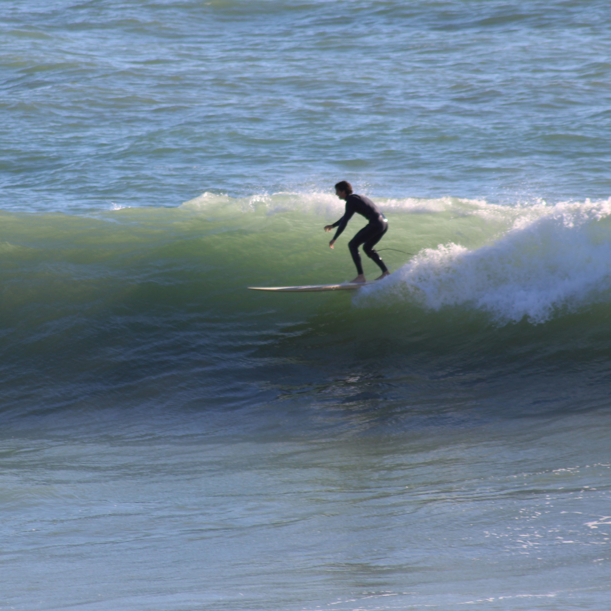
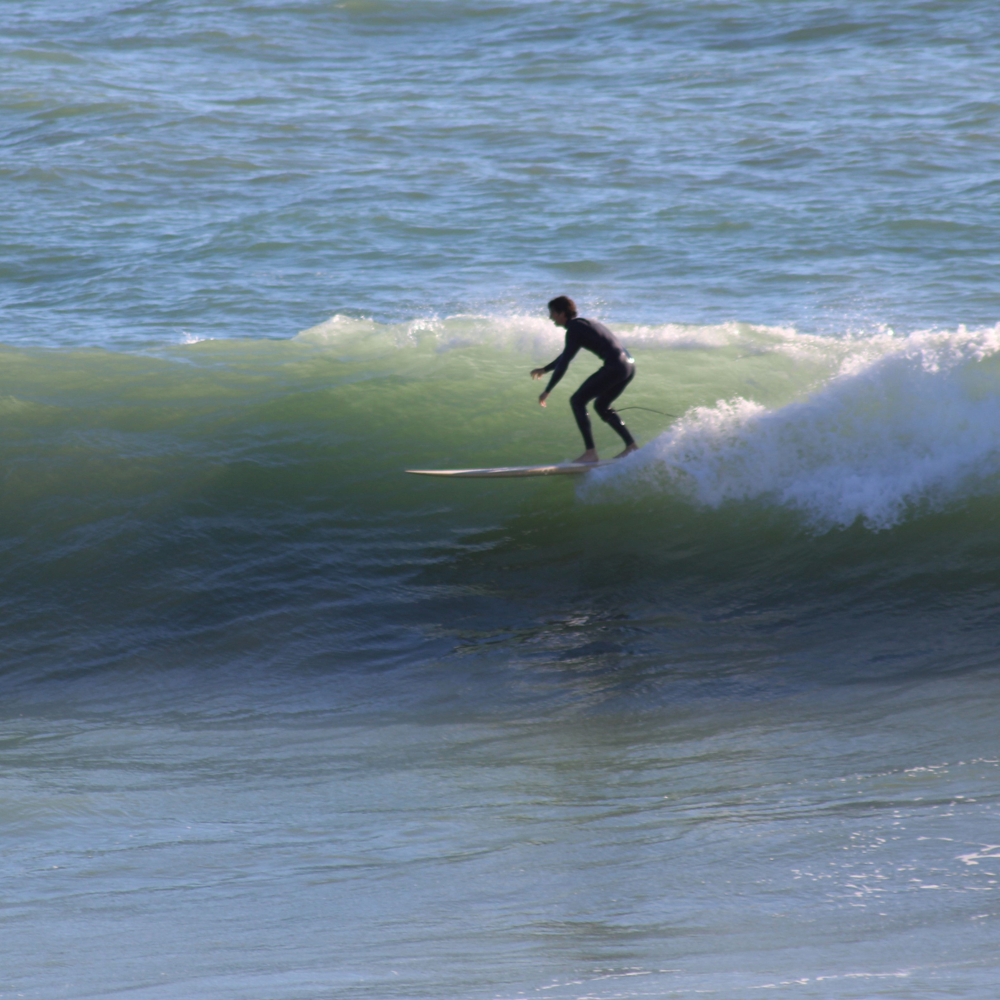

Une histoire, une vision.
Jacq Surfboards a été fondé par Mathieu Jacq, un passionné de surf et artisan chevronné en 2015. Avec quelques années d'expérience dans le façonnage de planches, Mathieu a transformé sa passion en métier et s'est lancé avec Lucas Midoux, un baroudeur tout autant passionné de surf. Ils créent désormais des planches sur mesure qui répondent aux besoins spécifiques de chacun, à l’Atelier de la Glisse depuis 2023.
Notre mission est de fournir des planches de surf qui non seulement excellent sur les vagues, mais qui reflètent également le caractère et le style de chaque surfeur. Nous nous engageons à fabriquer des produits de haute qualité en utilisant des matériaux durables et des techniques artisanales éprouvées.

 
